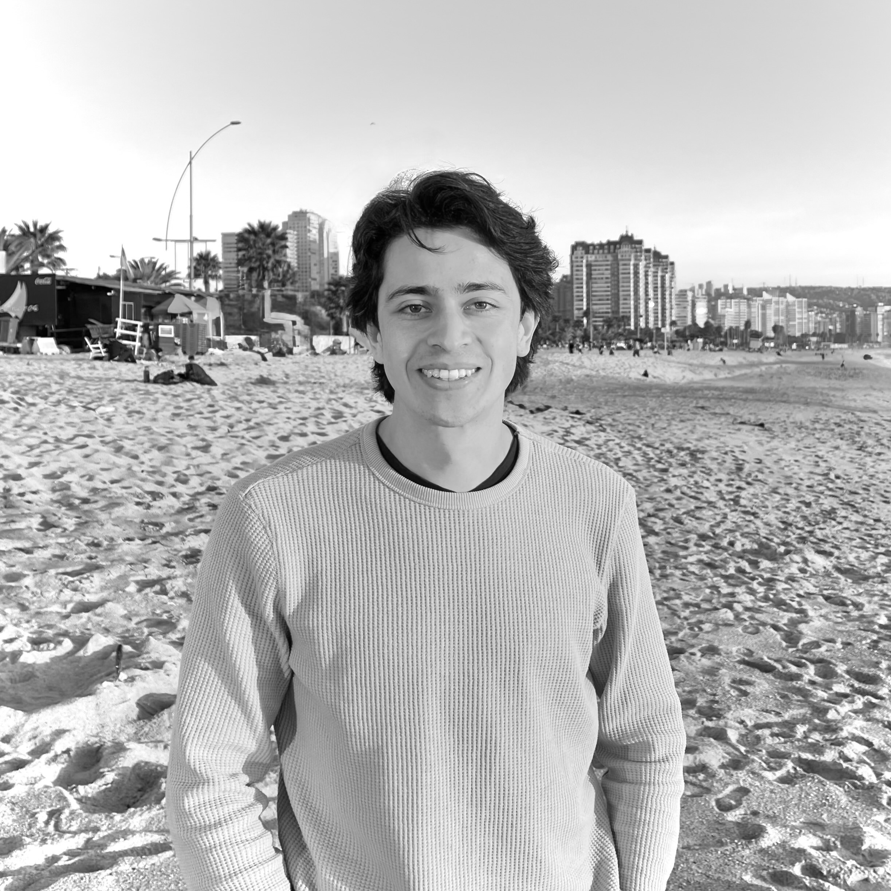

Aníbal Olivera Morales
Ph.D. candidate in Social Complexity Science
I am a Ph.D. candidate at the Research Center for Social Complexity (CICS), where my research explores social contagion and diffusion processes in networks using computational and quantitative approaches.
With a background in Physics [1, 2, 3] (B.Sc. 2020, M.Sc. 2022, UdeC), my work bridges theoretical modeling and empirical applications—from epidemiological simulations to the study of social influence.
I co-develop open-source tools for network analysis, including the R package netdiffuseR, and I have co-led workshops on its use at Sunbelt conference. I am currently a visiting researcher at the University of Southern California, working with Thomas W. Valente on the disadoption of behaviors in social networks—a study recently submitted to PNAS.
My current projects, funded by ANID (FONDECYT), apply network models—such as Ising models—to recidivism risk among incarcerated populations and run analyses of political dynamics in the Chilean Constitutional Convention.
I am also interested in teaching, ranging from graduate-level courses —such as SNA and FPE— to the development of curricular materials in Mathematics and Physics for undergraduate education.
You can find my code and projects on GitHub, or contact me at anibal.olivera.m@gmail.com.